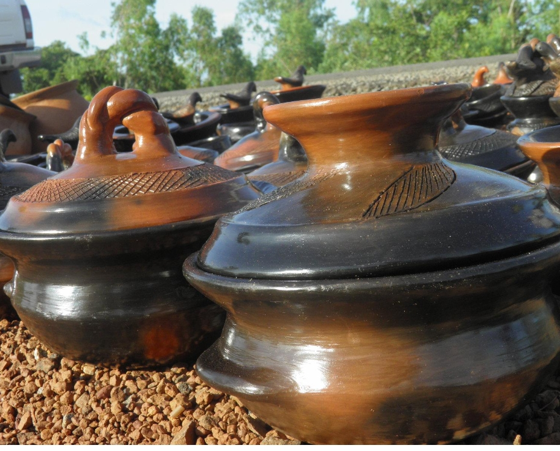

Description de la Poeterie
La poterie est un art historique important de la ville. Il témoigne d'une riche histoire et d'un patrimoine culturel unique.
Historique
Si cet art est toujours aussi vivant, c’est qu’il est l’héritage d’une longue tradition bien antérieure aux temps historiques.
Les techniques de production, les formes et les fonctions ont évolué au cours des âges.
Les fonctions de la poterie sont très nombreuses, dans la vie domestique tout d’abord, mais aussi dans les domaines de la religion, de la médecine, de l’architecture et même de la musique.
Aujourd’hui, malgré l’apparition des matériaux modernes, l’usage de la poterie est toujours d’actualité. En effet, presque dans toutes les familles au Burkina ou en Afrique possèdent au moins un canari.
Le village de Tcheriba est réputé pour ses poteries. Elles sont faites artisanalement, séchées, décorées, teintées puis cuites.
Le mode de cuisson est bien particulier puisqu’il n’y a pas de four : les objets sont posés sur un lit de branchages et sont recouverts d’autres petites branches. L’embrasement de l’ensemble suffit pour cuire les objets en terre et donne des teintes irrégulières aux poteries.